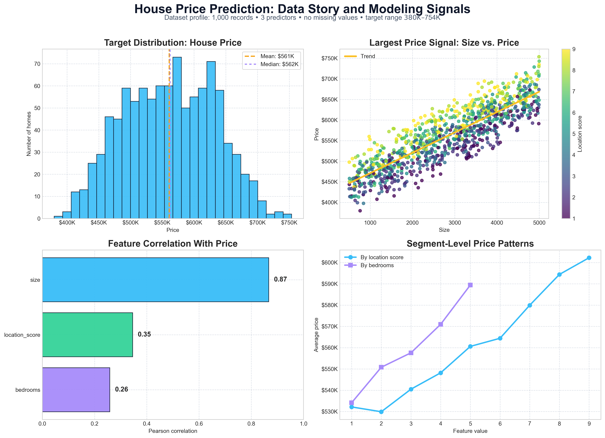
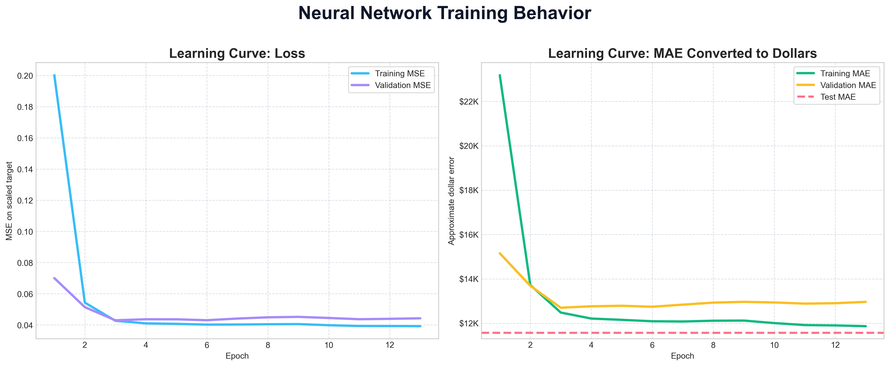
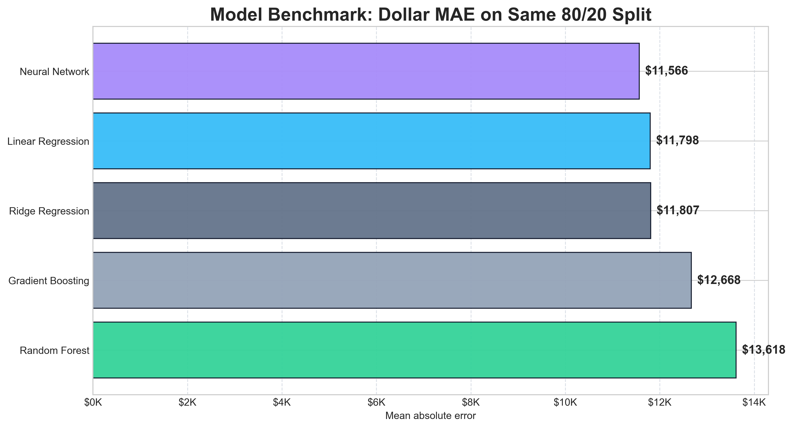
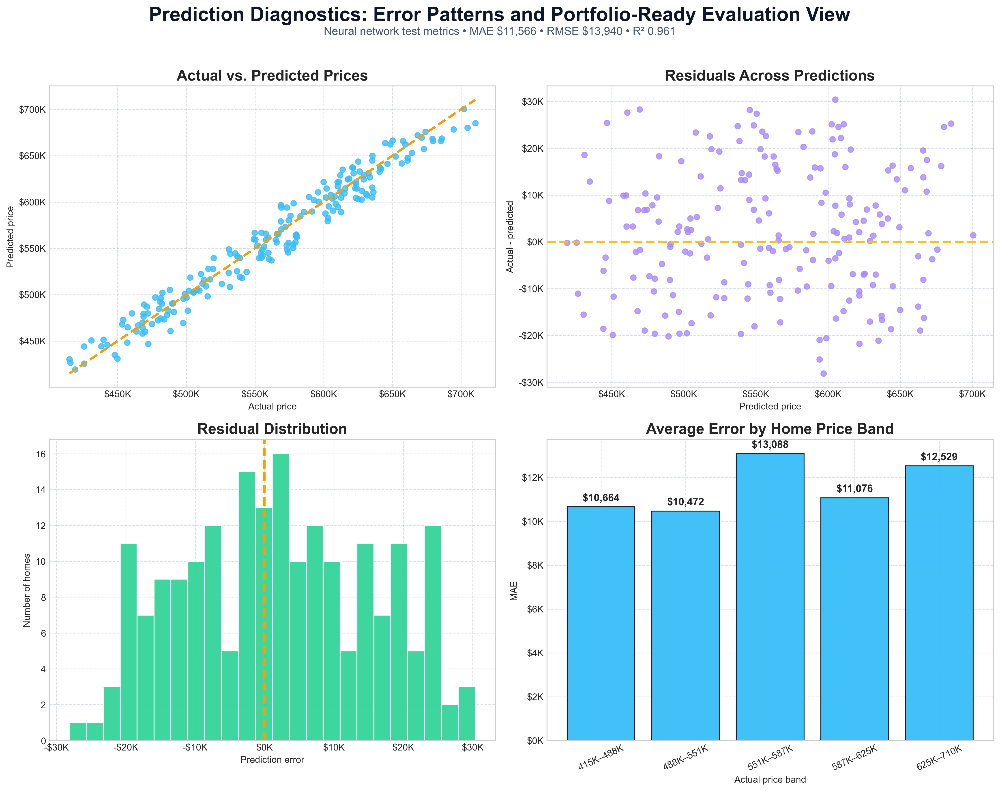
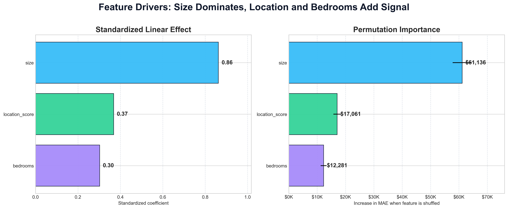

Neural Networks • Regression Modeling
House Price Prediction with Regression Benchmarking
Predicting house prices with neural network regression, model benchmarking, dollar-based error diagnostics, and feature-driver interpretation.
This project builds a TensorFlow/Keras regression workflow for house price prediction, compares it against traditional machine learning baselines, and explains model behavior through residual diagnostics and permutation importance.
Project Overview
This project predicts house prices from structured housing features using a neural network regression model, then evaluates performance in real dollar terms. The workflow combines data validation, exploratory analysis, standardized preprocessing, TensorFlow/Keras modeling, baseline benchmarking, residual diagnostics, and feature-driver interpretation.
Data Story
The dataset contains 1,000 complete housing records with three predictive features: property size, location score, and number of bedrooms. Before modeling, the notebook validates data quality, checks for missing values and duplicates, and explores how each feature contributes to price variation. The strongest signal comes from property size, while location score and bedrooms add secondary predictive value that helps explain differences between otherwise similar homes.

Neural Network Workflow
The neural network trains on standardized housing features and scaled target values, then converts predictions back to dollar prices for evaluation. Early stopping prevents unnecessary training once validation performance stabilizes, keeping the model compact and controlled.
Prepare Features
Split the data into training and test sets, then scaled features and target values using training-only transformations to avoid data leakage.
Train Neural Network
Trained a compact TensorFlow/Keras regression network with two ReLU hidden layers, Adam optimization, and early stopping.
Evaluate in Dollars
Converted predictions back to the original price scale and reported MAE, RMSE, R², residuals, and price-band errors.

Regression Model Benchmark
The neural network was benchmarked against simpler linear, regularized, and tree-based models using the same 80/20 split. The neural network produced the lowest MAE, but its advantage over Linear Regression was modest, about $233 in average error. This comparison keeps the project honest and shows that model selection should balance accuracy, interpretability, and complexity.
| Model | MAE | Portfolio takeaway |
|---|---|---|
| Neural Network | $11,565.78 | Lowest MAE overall, improving on Linear Regression by about $233 in average error. |
| Linear Regression | $11,798.37 | Nearly matched the neural network, showing that the dataset has a strong linear structure. |
| Ridge Regression | $11,807.38 | Regularized linear model performed similarly to ordinary linear regression. |
| Gradient Boosting | $12,667.65 | Strong tree-based benchmark, but weaker than neural and linear models here. |
| Random Forest | $13,618.12 | Useful nonlinear baseline, but produced the highest MAE among the compared models. |

Prediction Diagnostics
The strongest part of the project is the diagnostic analysis. Instead of reporting only one metric, the notebook examines actual-vs-predicted prices, residual distribution, error patterns, and model behavior across price bands.

Interpretation
The neural network achieved an MAE of about $11.6K and an R² of 0.961 after predictions were converted back into real dollar values. Benchmarking showed that the neural network performed best, while linear models remained highly competitive, making the project a practical study in accuracy, interpretability, and model complexity trade-offs. Residual diagnostics further helped identify where prediction errors were concentrated across the price range.
Feature Drivers
The feature analysis confirms that property size is the strongest driver of predicted price, while location score and bedrooms provide additional signal. The project compares standardized linear effects with permutation importance to show both simple feature relationships and each feature’s contribution to model performance.

Role and Implementation
I implemented the full regression modeling workflow, from data validation and exploratory analysis to neural network training, benchmark comparison, residual diagnostics, and feature-driver interpretation. The goal was to evaluate not only whether the model predicted well, but whether its errors and feature behavior could be explained clearly.
Regression Modeling
Built and evaluated a TensorFlow/Keras neural-network regression model for predicting continuous house prices from structured property features.
Model Benchmarking
Compared neural network performance against Linear Regression, Ridge Regression, Random Forest, and Gradient Boosting using the same train/test split.
Error Diagnostics
Evaluated model behavior using MAE, RMSE, R², actual-vs-predicted plots, residual analysis, and price-band error patterns.
Tools
Python • Pandas • NumPy • Matplotlib • Scikit-learn • TensorFlow/Keras • Jupyter Notebook
Artifacts
The project artifacts include the notebook, source repository, visual diagnostics, benchmark results, and feature-driver analysis.
GitHub Repository
Source repository containing the notebook, code, visuals, and project documentation.
Open repository →Notebook
Main Jupyter Notebook covering data validation, neural network regression, benchmarking, diagnostics, and feature interpretation.
house_price_prediction_nn.ipynbVisual Outputs
Selected visuals for data story, model benchmark, neural network training, prediction diagnostics, and feature drivers.
images/projects/house-price/